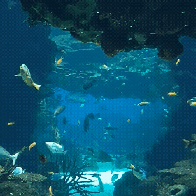
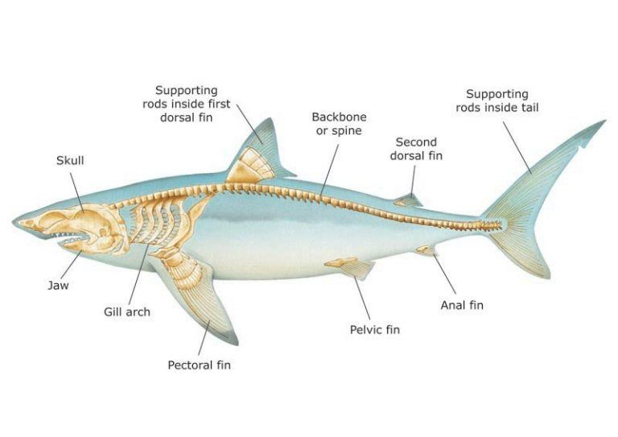
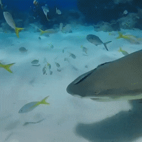
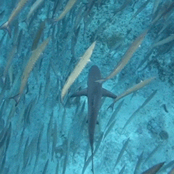

⋅.˳˳.𓆝 ⋆.˳PEIXES🐟 .°•⋅.˳˳.
🠔 inicio 𓆝 ----𓆞---- 𓆟 Mamíferos ➔

★ O que são peixes?
Peixes são animais vertebrados que vivem em ambientes aquáticos, tanto em água doce quanto salgada. Em sua maioria, respiram por meio de brânquias, possuem nadadeiras para se locomover e apresentam o corpo coberto por escamas. Existem milhares de espécies de peixes no mundo, com grande variedade de tamanhos, formas, cores e comportamentos. Sua alimentação também varia entre espécies, podendo incluir algas, plantas, plâncton e outros animais. Os peixes possuem grande importância para os ecossistemas aquáticos, participando das cadeias alimentares e contribuindo para o equilíbrio da vida nos oceanos, rios e lagos..

★ Características dos Peixes
Os peixes possuem diversas características que os tornam adaptados à vida aquática. Essas adaptações permitem que eles respirem, se movimentem, encontrem alimento e sobrevivam em diferentes ambientes aquáticos.

಄ Principais características:
- Corpo hidrodinâmico: A forma do corpo geralmente reduz a resistência da água, facilitando a natação.
- Brânquias: São estruturas responsáveis pela respiração, permitindo a retirada do oxigênio presente na água.
- Nadadeiras: Auxiliam na locomoção, no equilíbrio e na direção. Existem nadadeiras dorsais, caudais, peitorais e ventrais.
- Escamas: A maioria dos peixes possui o corpo coberto por escamas, que ajudam na proteção do animal.
- Sistema sensorial: Muitos peixes possuem a linha lateral, capaz de detectar movimentos e vibrações na água.
- Reprodução: Varia de acordo com a espécie. Muitos peixes depositam ovos, enquanto algumas espécies dão origem a filhotes vivos.
★ peixes mais conhecidos
Alguns dos peixes mais conhecidos incluem:
- Peixe-palhaço (Amphiprioninae)
- Peixe-espada (Xiphias gladius)
- Peixe-boi (Trichechus)
- Peixe-leão (Pterois)
- Peixe-gato (Siluriformes)
- Peixe-dourado (Carassius auratus)
- Peixe-espinho (Diodontidae)
- Peixe-anjo (Pomacanthidae)
★ tubarões
Os tubarões são um grupo de peixes cartilaginosos conhecidos por sua forma corporal distinta e habilidades de caça. Eles possuem um esqueleto feito de cartilagem, em vez de ossos, o que os torna mais leves e ágeis na água. Os tubarões têm uma variedade de tamanhos, desde espécies pequenas, como o tubarão-anão, até espécies grandes, como o tubarão-baleia. Eles desempenham um papel crucial nos ecossistemas marinhos, ajudando a manter o equilíbrio das populações de outras espécies. Apesar de sua reputação como predadores, a maioria dos tubarões não representa uma ameaça significativa para os seres humanos.

಄ Principais características dos tubarões:
Corpo hidrodinâmico: A forma do corpo geralmente reduz a resistência da água, facilitando a natação.
Cartilagem: O esqueleto dos tubarões é composto por cartilagem, tornando-os mais leves e flexíveis do que os peixes ósseos.
Dentes afiados: Os tubarões possuem dentes afiados e substituíveis, adaptados para capturar e rasgar suas presas.
Sentidos aguçados: Eles têm sentidos altamente desenvolvidos, incluindo visão, olfato e a capacidade de detectar campos elétricos, o que os torna predadores eficientes.
tubarões mais conhecidos
Alguns dos tubarões mais conhecidos incluem:
- Tubarão-branco (Carcharodon carcharias)
- Tubarão-tigre (Galeocerdo cuvier)
- Tubarão-martelo (Sphyrnidae)
- Tubarão-baleia (Rhincodon typus)
- Tubarão-azul (Prionace glauca)
- Tubarão-limão (Negaprion brevirostris)
- Tubarão-de-pontas-negras (Carcharhinus melanopterus)

